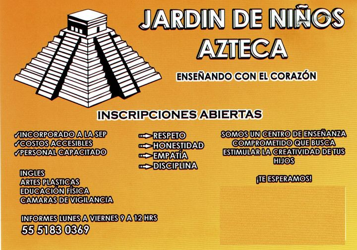
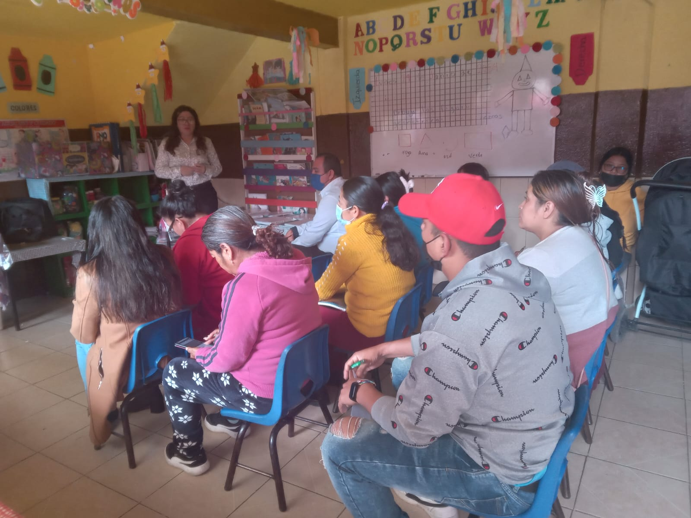
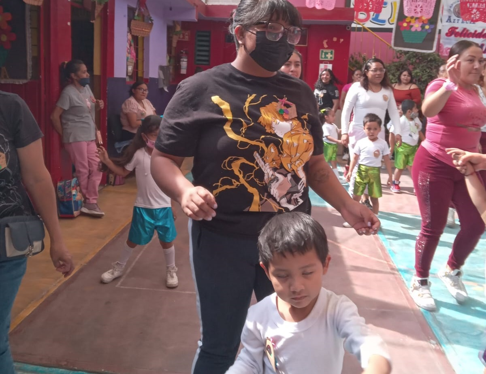
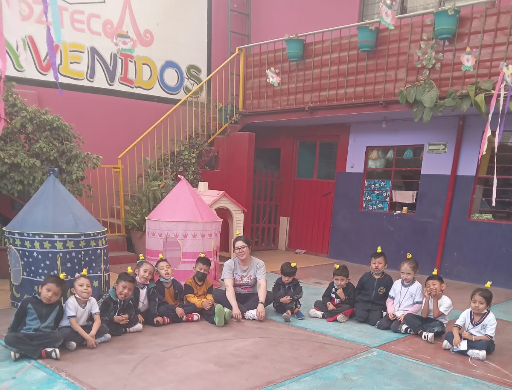
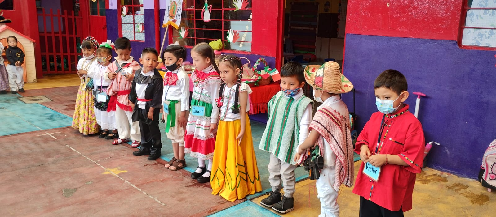

Inicio
Nosotros
Contacto
El Jardín de Niños Azteca esta comprometido a potencializar las capacidades, habilidades, conocimientos y actitudes de los niños y niñas a través de las Artes, Danza y Juego.




